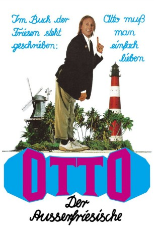
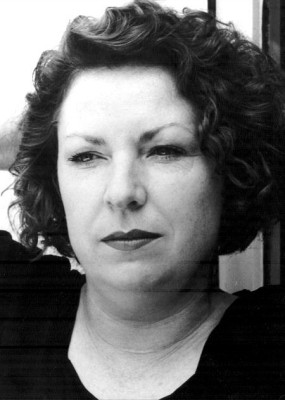

#1407 Otto 3 - Der Ausserfriesische
Alternativ: Otto - Der Außerfriesische
 
 IMDB-Wertung: 5.7 / 10
IMDB-Wertung: 5.7 / 10  Metascore: 0
Metascore: 0 
Um zu verhindern, daß sein geliebter Leuchtturm einer Raketenbahnstrecke weichen muß, braucht Otto dringend seinen in die USA ausgewanderten Bruder Benno, dem das Bauwerk in Wirklichkeit gehört. Also macht sich Otto auf den Weg nach Miami, wo Benno Privatdetektiv geworden ist. Doch Amerika ist groß und fremd und Otto begegnet jeder Menge merkwürdiger Gestalten...
Jahr: 1989
Dauer: 88 Minuten
FSK: 6
Land: West-Deutschland Studio: Tobis FilmkunstTonspuren:
Untertitel:
Auflösung: 720p (1280x720) Größe: 3358 MB
Genre: Komödie
Regisseur: Marijan David Vajda,  Otto Waalkes
Otto Waalkes
Drehbuch: Bernd Eilert, Robert Gernhardt, Pit Knorr, Otto Waalkes
Soundtrack: Thomas Kukuck, Christoph Leis-Bendorff
Darsteller:
-  Hansi Jochmann als Karin
- Robert Deacon als Filmcrew
- Steffi Graf als Herself
- Manis the Orangutan als Orang-Utan , archive footage, uncredited
- Otto Waalkes als Otto Gross / Benno Gross
- Barbara May als Frauke
- Hans Peter Hallwachs als Grödel
- Volkmar Kleinert als J.R. Van Devil
 Arnold Marquis als Baron von Platt
Arnold Marquis als Baron von Platt- Christine Neubauer als Frieda
- Tony Guzman als El Cucaracho
- Uwe Hacker als Herr im Flugzeug
- Wolfgang Zerlett als Brach
- Claudia Lehmann als Gisela
- Sabine Wagner als Anna
- Horst Tomayer als Jan
- René Geney als Kellner im Konzern
- Wilken F. Dincklage als Grabscher
- Elisabeth Goebel als Krabbenpulerin
- Rudolf Frickau als Bürgermeister
- H.R. Fröhlich als Assessor
- Maximilian Rüthlein als Referendar
- Rudolf Unger als Pastor
- Werner Lustig als Schäfer
- Walter Jacob als Fischer
- Hans Böhrs als Fährmann
- Imke Eckart als Ottos Mutter
- Heinrich Kunst als Opa
- Harry Rogers als Lamotta
- Joe Colligan als 1. Bodyguard
- Chas Casaverde als 2. Bodyguard
- Leo Casino als Taxidriver
- Robert Moss als Filmcrew
- John Zambito als Filmcrew
- Tessroy Phillips als 1. Gangmember
- Nelson González als 2. Gangmember
- George Ortuzar als 3. Gangmember
- Tony Greadington als Waiter in Disco
- Anthony H. Pagola als Bouncer
- Nandi als Hooker
- Iris Santiago als Hooker
- Fay Martinez als Hooker
- Anita Griffith-Shay als Disco Dancer
- Katharina Brauren als Herself
- Vicco von Bülow als Himself
- Peter Kirchberger als El Cucaracho / Lamotta / Autocomputer , uncredited
Datei: X:\6-Hexalogie(A-Z)\Otto\Otto 3 - Der Ausserfriesische (1989, FSK6, 1280x720).mkv seit 30.06.2015
Festplatte: HD Collection-3(N-Z)-6(A-Z)
 Es gibt insgesamt 9 Filme in der Gruppe '6-Hexalogie(A-Z)\Otto'
Es gibt insgesamt 9 Filme in der Gruppe '6-Hexalogie(A-Z)\Otto'